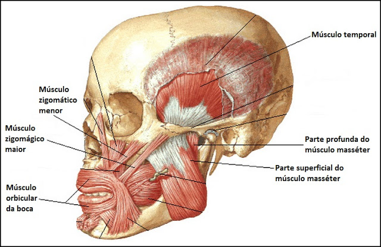
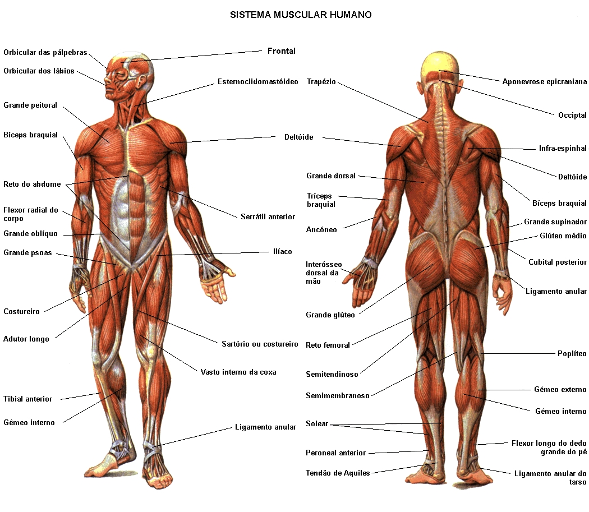

São divididos de acordo com sua função e localização na cabeça, como os músculos subcutâneos, os mastigadores, dos órgãos dos sentidos e os viscerais. Loga abaixo uma lista com as principais estruturas deste grupo.
Os músculos dessa região são divididos da seguinte forma: cervicais, supra e infra-hióideos, vertebrais anteriores e laterais e músculos viscerais. Logo abaixo os principais músculos do pescoço.
O tronco, nos animais é a parte central do corpo. É de onde se projetam os membros e a cabeça. São subdivididos em músculos do dorso, suboccipitais, tórax abdome, pelve e períneo.
Há músculos que se ligam a coluna vertebral e caixa torácica. São divididos basicamente em músculos dos braços, antebraço e mãos.
Estão entre os músculos mais fortes do corpo humano, responsáveis pela locomoção e sustentação do corpo. São subdivididos em músculos das ancas, coxa, perna e dos pés.
